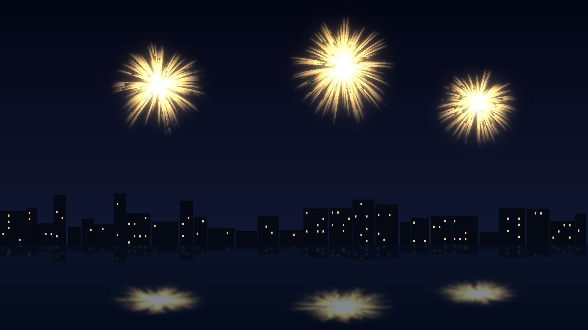
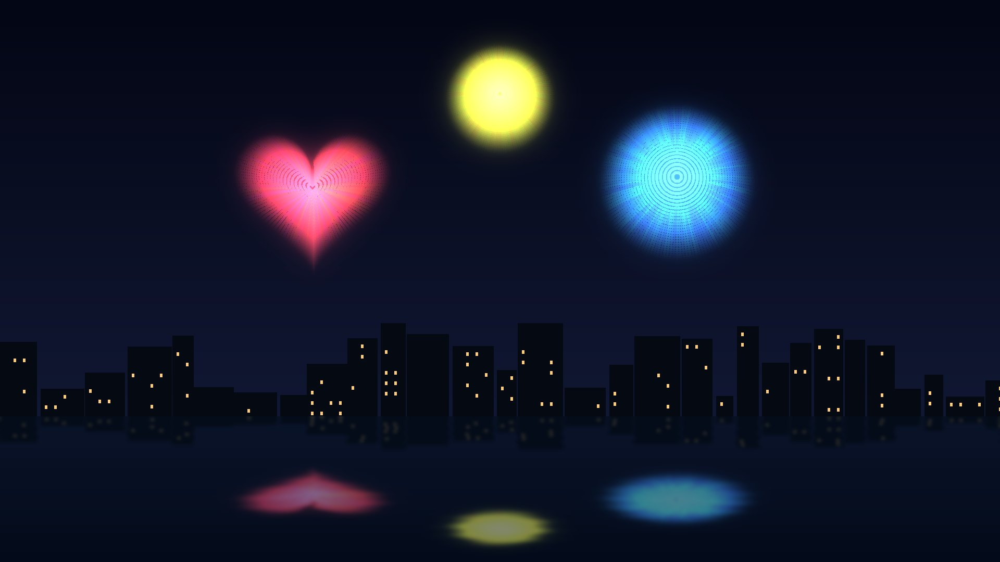
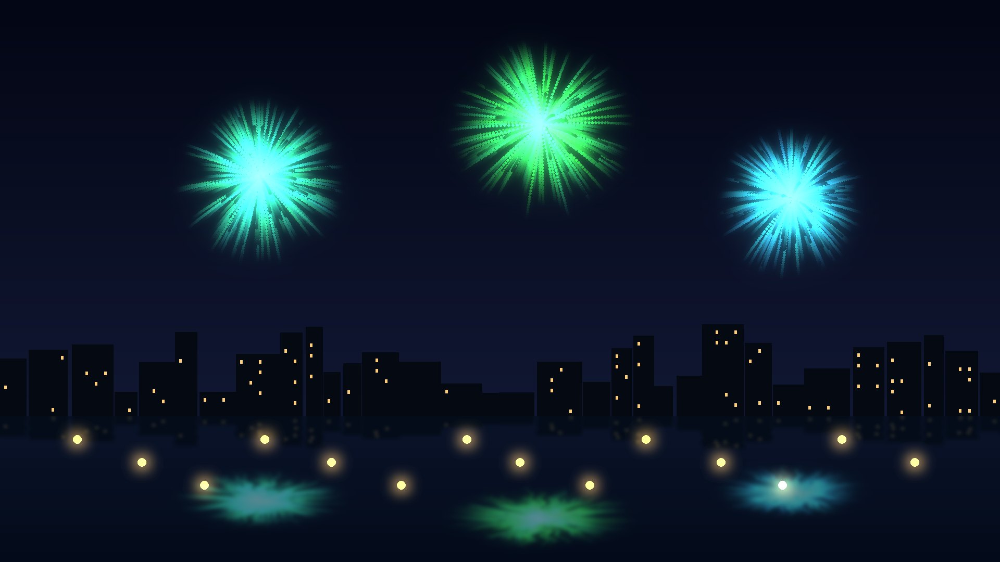
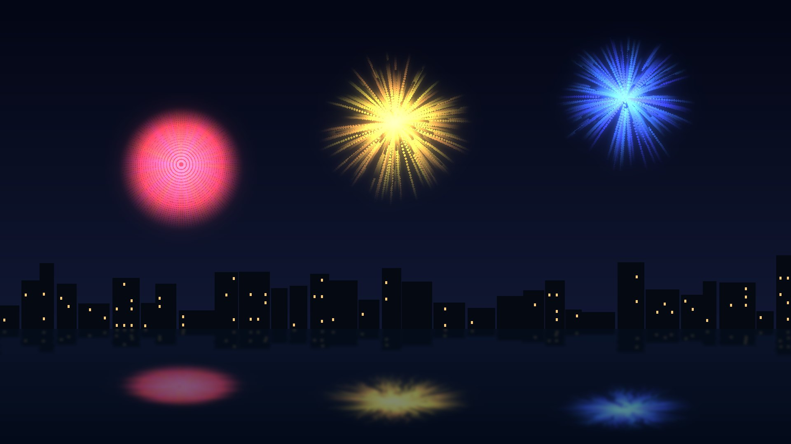
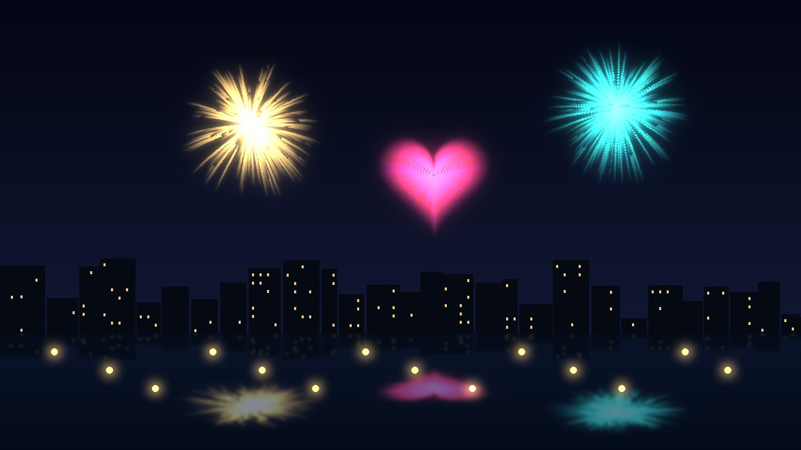
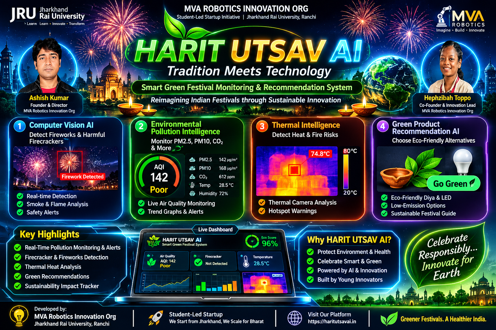

SWAS
Safe Water ReleaserDesigned to release water vapour to help suppress dust. The supplied deck notes no potassium nitrate or sulphur.
CSIR-NEERI case studyA cinematic, sound-enabled festival experience. Best with headphones.
An AI-assisted sustainable festival platform combining camera-based visual event monitoring, green-fireworks research, environmental awareness and measurable community impact.
*Figures refer to selected CSIR-NEERI green-cracker categories as described in the supplied presentation; reductions do not mean zero emissions.
A fireworks greeting from Ashish Kumar and Hephzibah Toppo. Watch the night sky spell out Jharkhand Rai University and MVA Robotics Innovation Org. Turn sound on for the full show.
Real photographs with credits, plus Full-HD generated artwork. Click an image to enlarge it, or fire a live salvo over the page.





HARIT UTSAV AI explores how accessible technology can help communities understand visible fireworks activity, learn about pollution, discover safer celebration practices and make sustainability measurable—without replacing cultural traditions.
Interactive models rendered live in your browser. Drag any scene to rotate it.
Concept enclosure for the PM, CO₂ and thermal bridge described in the sensor protocol.
DRAG TO ROTATE · CONCEPT MODELLeft: wider, denser particle plume. Right: reduced plume. An illustrative animation, not measured data.
DRAG TO ROTATE · ILLUSTRATIVEAn 8×8 radiometric array shown as heat columns. Illustrative animation, not live data.
DRAG TO ROTATE · ILLUSTRATIVEUse a webcam to observe bright flashes, motion and possible smoke-like visual changes in the camera view.
🔒 Video is analysed in your browser. No recording or upload is performed by this prototype.
Start the camera to analyse the scene.
Estimate how choices change the scale of a community celebration. These are awareness estimates, not certified emissions measurements.
Choose practical actions for your campus, neighbourhood or community event.
Research highlights adapted from the supplied AI Green Fireworks presentation.
Designed to release water vapour to help suppress dust. The supplied deck notes no potassium nitrate or sulphur.
CSIR-NEERI case studyThe supplied deck describes a formulation direction without potassium nitrate or sulphur.
CSIR-NEERI case studyThe deck describes aluminium being minimised and used in the flash for ignition.
CSIR-NEERI case studyComputational research can help screen material properties before laboratory validation. The supplied presentation describes DFT, graph neural networks, generative models and combustion tools as research directions—not as a deployed consumer-firework design engine.
Use traditional diyas safely or energy-efficient LED lighting.
Separate dry, wet and recyclable festival waste.
Consider infants, older adults, patients, animals and sensitive areas.
Use verified local guidance and follow current official rules.
Student-led innovation initiative · Jharkhand Rai University, Ranchi.

Flyer artwork is a promotional concept. Any dashboard readings or eco-score shown in the artwork are illustrative graphics, not live sensor measurements.
MCA · Jharkhand Rai University
MVA Robotics Innovation OrgBCA · Jharkhand Rai University
MVA Robotics Innovation OrgEight shell types, a synthesised sound engine, choreographed shows and one-click video capture. Pick a shell, tap the sky, then record your own clip.
Video and images are captured from the canvas in your browser; nothing is uploaded.
Download video (.webm) ↓Gallery images are computer-generated artwork (tools/make_images.py), not photographs. Sounds are synthesised live in your browser. Real fireworks are subject to local law and safety rules.
Interactive labs for visual storytelling, analytics, computer vision and a smart-venue digital twin. Press Ctrl+K for the command palette or use voice control.
Click the sky to fire a shell. The plume index and CV boxes are simulated visuals for explanation, not measurements or real detections.
Model data is illustrative: baselines and the up-to-40% reduction cap are assumptions, not measurements. The CSV opens directly in Power BI, Excel or Tableau; swap in real sensor exports for actual reporting.
Upload a festival photo to highlight warm-colour (red tint) and very bright (blue tint) pixels. Everything stays in your browser.
Concept visualisation with simulated sensors, plume and drone. Roadmap chips are future ideas, not shipped features.
We start from Jharkhand. We scale for Bharat.
One workspace for visual signals, live air-quality sensors, thermal readings, alerts and greener choices.
Connect a supported microcontroller over USB Serial. The device should stream one JSON object per line.
Thermal values must come from a radiometric thermal camera or sensor (for example, a calibrated MLX90640/AMG8833 system). An ordinary webcam cannot measure temperature.
Prefer traditional diyas or energy-efficient LED lighting for decorative illumination.
If fireworks are permitted locally, buy only authorised, correctly labelled green crackers from licensed sellers. Check current local rules and certification; “green” does not mean pollution-free.
Arrange separate collection for paper, packaging, food waste and spent materials. Never burn waste.